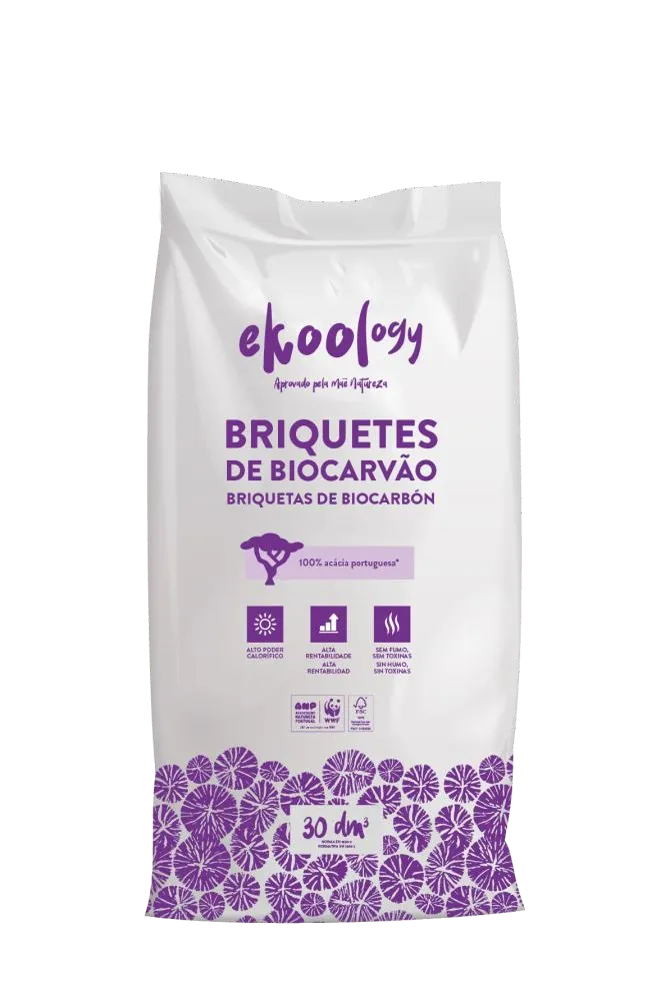
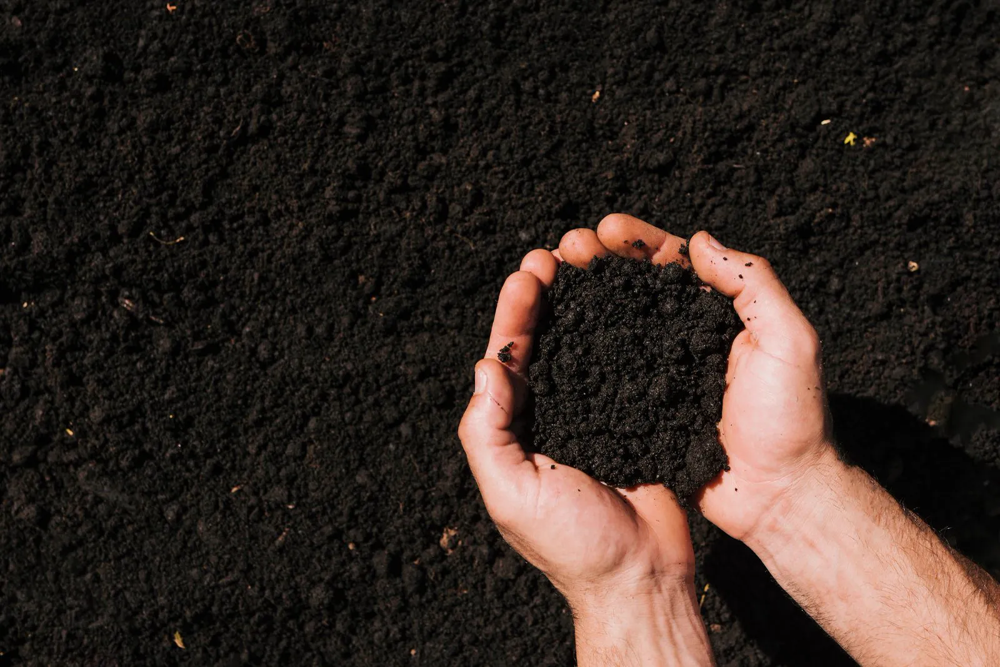

A família EKOOLOGY
Produtos com a floresta lá dentro.
Da brasa da tua grelha ao aquecimento da tua casa: biocarvão, briquetes e pellets — sempre com madeira portuguesa como matéria-prima e a Mãe Natureza como fiscal de qualidade.

Da brasa da tua grelha ao aquecimento da tua casa: biocarvão, briquetes e pellets — sempre com madeira portuguesa como matéria-prima e a Mãe Natureza como fiscal de qualidade.
O nosso clássico: pedaços de biocarvão de acácia com +94% de carbono fixo. Acende em 15–20 minutos, brasa forte e estável, pouco fumo e sem faíscas. Ideal para grelhas domésticas e profissionais.

A mesma pureza em formato compactado e uniforme: queima previsível, calor constante e duração prolongada. A escolha dos profissionais e das grelhadas longas — entrecosto, frango, defumados.

A marca que aquece a tua grelha também aquece a tua casa. Pellets de biomassa produzidos na nossa unidade dedicada em Penacova, com a certificação europeia mais exigente — ENplus® A1 — para recuperadores, salamandras e caldeiras.

O nosso biocarvão também cultiva. Inspirado na fértil Terra Preta da Amazónia, o KOOLBIOCHAR é um aditivo de solo — Terra Preta de Síntese — que combina biocarvão de acácia com resíduos orgânicos compostados. Desenvolvido em copromoção com a Escola Superior Agrária de Coimbra (Politécnico de Coimbra), no âmbito de um projeto europeu de I&D.
Porque queremos que todos possam usufruir deste produto único, produzimos o carvão biológico BBQ com a marca própria do Aldi, disponível em todas as lojas da rede. Por fora é a marca do Aldi; por dentro é o mesmo biocarvão de acácia portuguesa, da mesma pirólise lenta, em Penacova.
Estamos a preparar a família de acessórios KoolNature — desenhada para durar e para fazer de qualquer grelhador um mestre.
Lã de madeira e cera vegetal. Acendem o biocarvão sem químicos nem cheiros.
Madeiras portuguesas — carvalho, videira, sobro — para dar ao fumo um sotaque nacional.
Proteção até altas temperaturas, punho longo, com a marca da casa.
Grelha limpa sem arames soltos. Ferramentas honestas que duram.
Temperos próprios para peixe, carne e legumes — o toque final do mestre.
Caixa-presente com biocarvão, acendalhas, luva, sal e o Manual do Grelhador impresso.

Cada produto desta página existe para o mesmo momento: o brinde ao pôr do sol, a mesa cheia, a conversa que se estica até a brasa morrer. Escolhe o formato, chama o pessoal — nós tratamos do fogo.
Inspira-te nas receitasEKOOLOGY está disponível nas lojas Aldi em Portugal e numa rede oficial de 30 distribuidores de norte a sul — pesquisa a tua zona na página de Contactos. Profissionais e revendedores: fala diretamente connosco.